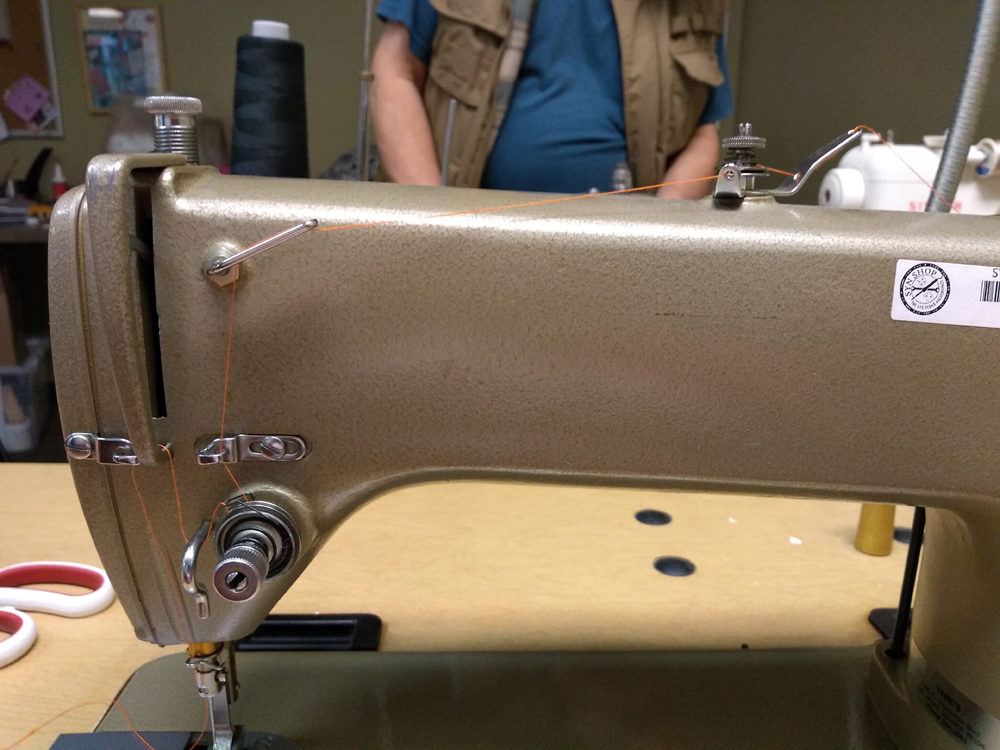
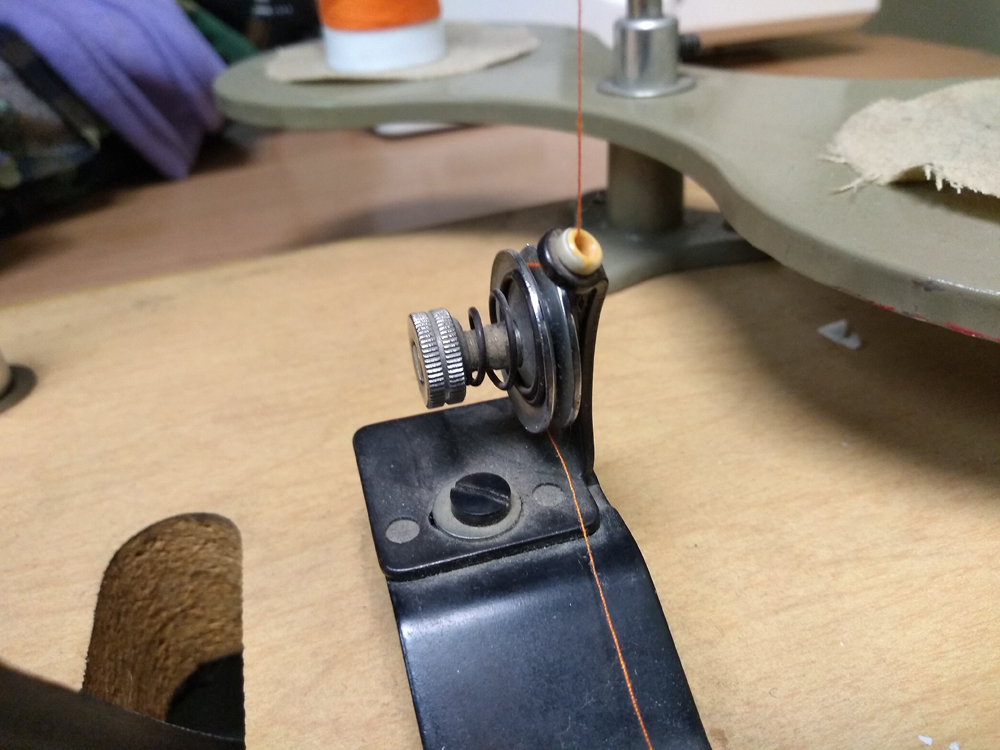
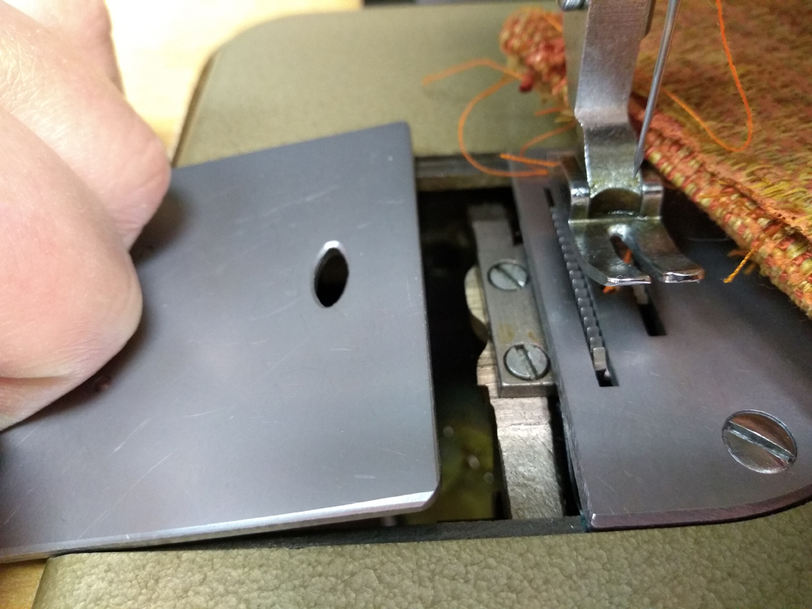
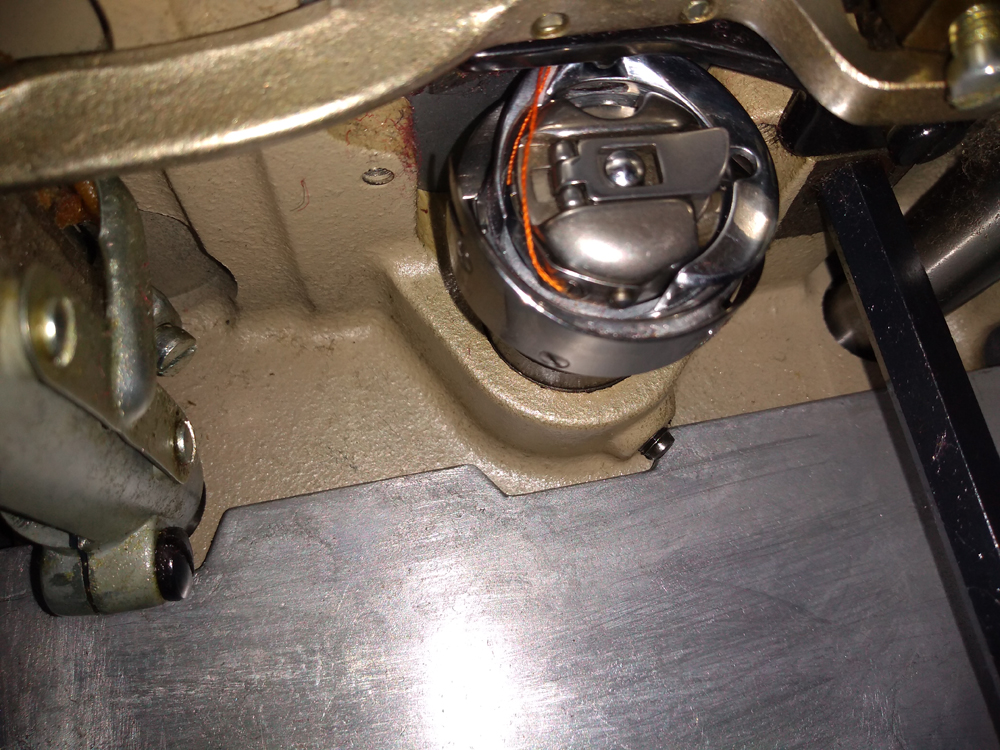
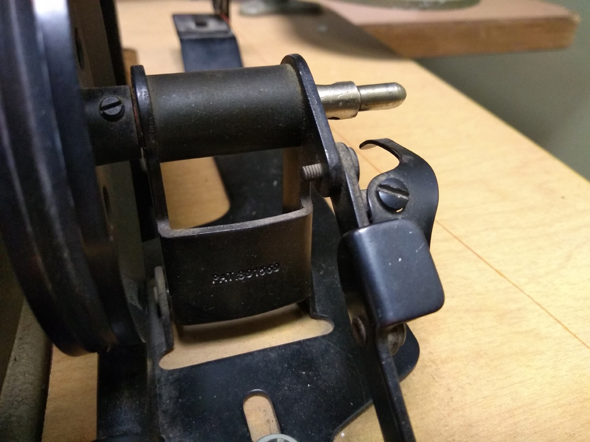
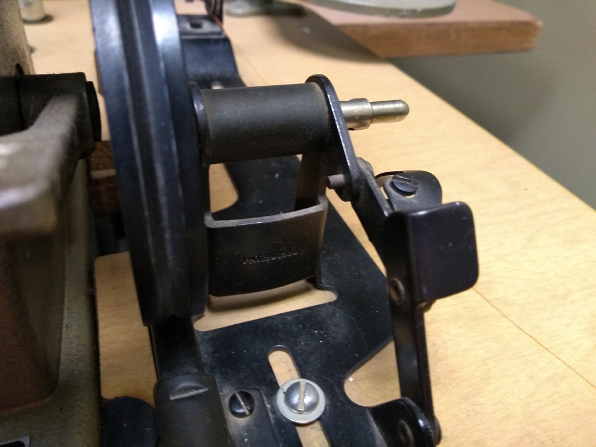
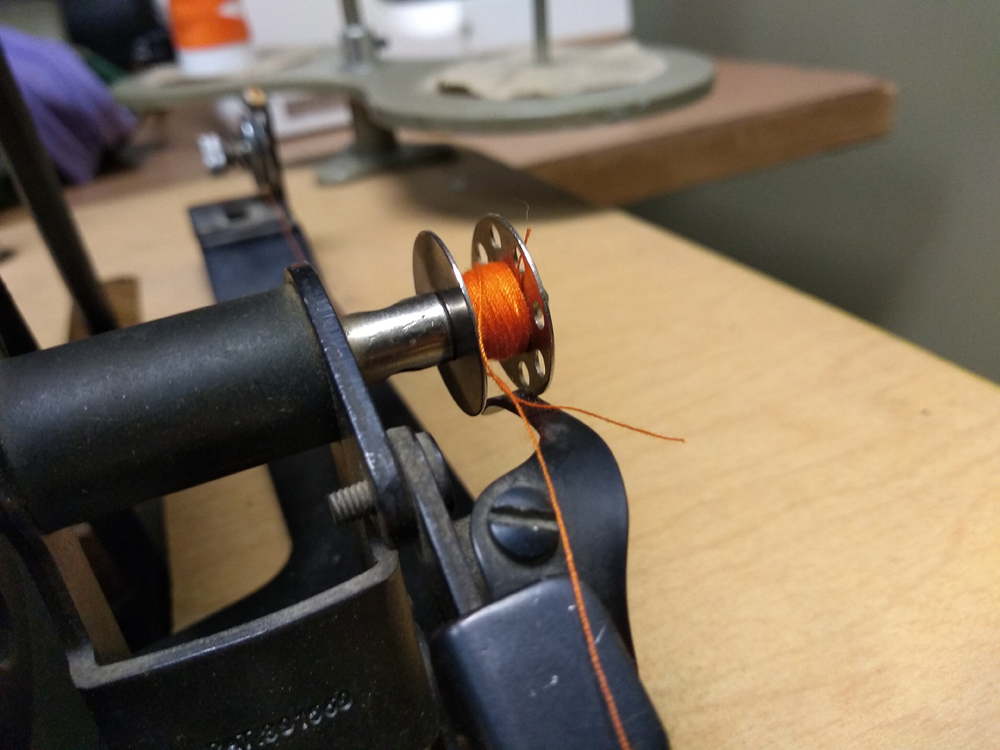
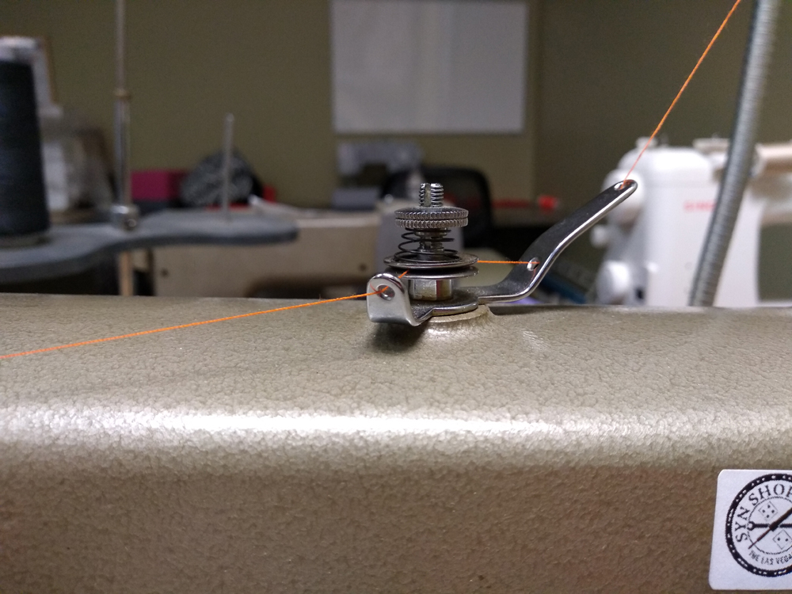
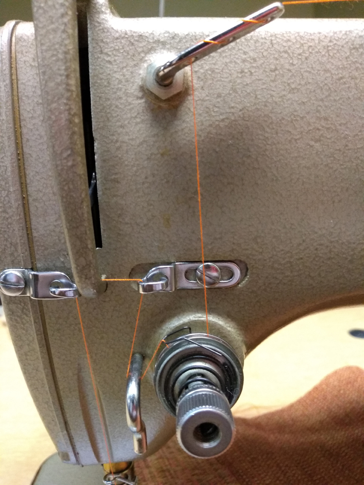
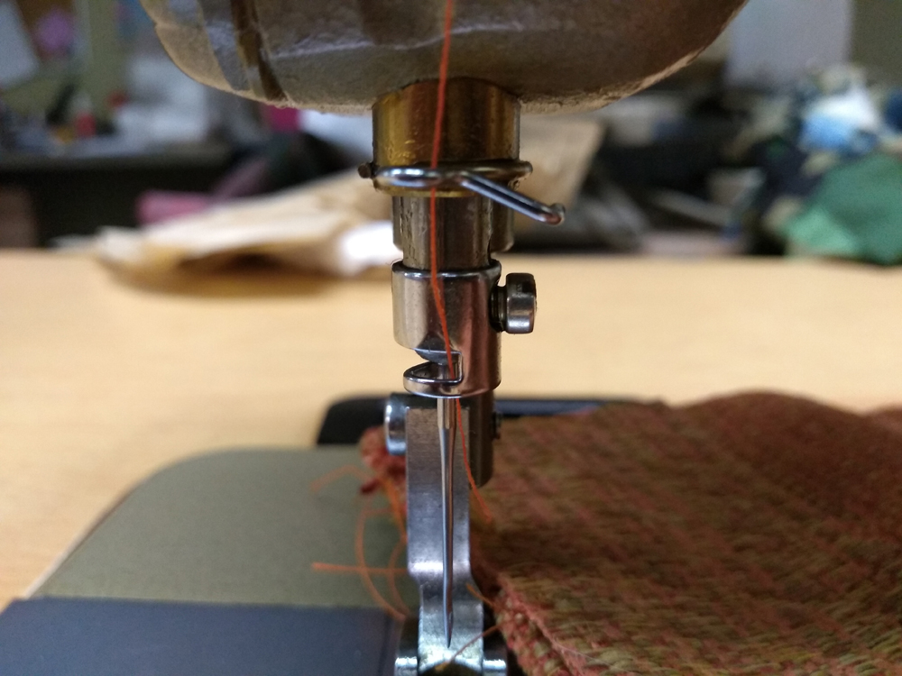

Consew 230 Industrial Sewing Machine
This is the green industrial table mounted sewing machine located in the craft room. It should be plugged into the far wall from the doorway. The switch for the motor is on the right hand side under the table. There will be a audibly noticeable hum if the motor is plugged in and is turned on.

Winding the Bobbin
This machine has a separate bobbin winding mechanism to the right of the machine that is threaded differently from threading the machine. The thread stand has a place for two cones so if you have a second cone of the color you are using, you can leave the machine threaded and thread the bobbin winder with the other one. Otherwise, you will have to remove the thread from the machine, and wind the bobbin first, then re-thread the machine. 
Feed the thread into the hole above, then seat between the plates, back to front.
The bobbin for this machine is underneath the table. If you open the bobbin cover, it will be easier to see your fingers and not have to stick your head under the desk to get the bobbin carrier out  
Once the bobbin carrier is out, remove the bobbin. On the bobbin winder, there is a lever that you can pull towards you.   Once the lever is open, slide the bobbin onto the spindle and pass the thread through one of the holes in the bobbin. Close the lever again. Pressing the pedal will now wind the bobbin, hold the thread for a few rotations. 
Threading the machine
You can use a separate cone for the machine than the bobbin, but if you only have one, remove the thread from the bobbin threading. Instead bring the thread over to the top of the machine and follow the picture sequence below to properly thread the machine   